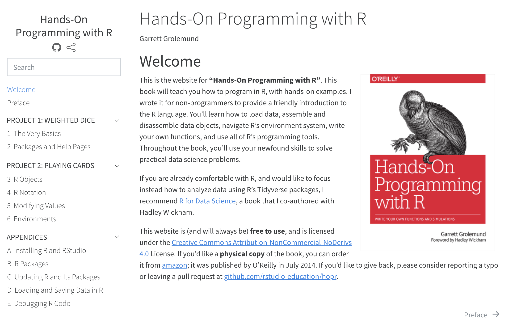
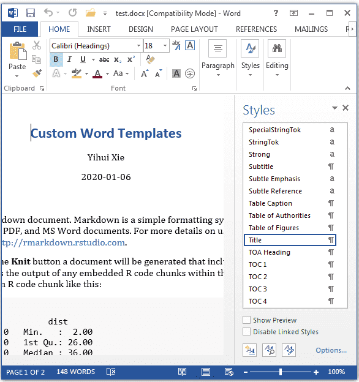
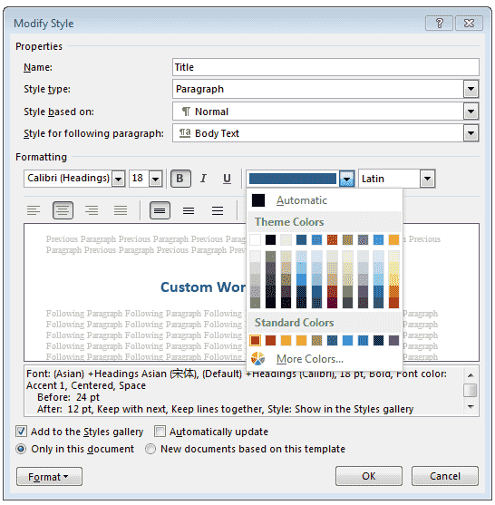

Authoring
See the full guide on Book Structure.
Book Structure
The structure of a Quarto book can be as simple as a list of chapters, or can alternatively incorporate multiple parts and/or appendices. Quarto book chapters and sections are automatically numbered (for cross-referencing), however you can also specify that some parts of the book should remain unnumbered.
The simple book configuration generated by quarto create-project illustrates the basics:
book:
title: "mybook"
author: "Jane Doe"
date: "5/9/2021"
chapters:
- index.md
- intro.md
- summary.md
- references.md- The index file is required and includes preface, acknowledgements, etc. Content in the index file is unnumbered.
- The remainder of
chaptersincludes one or more book chapters. - The
references.mdfile will include the generated bibliography (see References below for details).
Format Options
If you want to specify rendering options (including format-specific options), you do it within the _quarto.yml project file rather than within the individual markdown documents. For example:
highlight-style: pygments
bibliography: references.bib
csl: citestyle.csl
format:
html:
theme: cosmo
code-copy: trueThis is because when rendering a book all of the chapters are combined together into a single document (with a single set of format options).
Chapter Titles
Since rendering options are provided in _quarto.yml, you’ll typically see a simple level-one header at the top of chapters. For example:
# IntroductionAs compared to typical Quarto documents where you’d see something like this:
---
title: "Introduction"
---Note that you will see the following YAML front matter in files generated by quarto create-project:
---
knit: quarto render
---This YAML metadata is provided per-file in order to instruct RStudio to use Quarto (as opposed to the rmarkdown package) to render the document. This metadata won’t be required once RStudio can correctly recognize Quarto documents/projects.
Chapter Numbers
All chapters are numbered by default. If you want a chapter to be unnumbered simply add the .unnumbered class to it’s main header. For example:
# Resources {.unnumbered}You can mix together numbered and unnumbered chapters. Note however that while you can link to unnumbered chapters, you can’t cross reference figures, tables, etc. within them. Unnumbered chapters are therefore mostly useful for prefatory content or references at the end of your book.
Section Numbers
You can set the numbering depth via the number-depth option. For example, to only number sections immediately below the chapter level, use this:
number-depth: 1Note that toc-depth is independent of number-depth (i.e. you can have unnumbered entries in the TOC if they are masked out from numbering by number-depth).
Cover Images
You can provide a cover image for EPUB and/or HTML formats using the cover-image option. For example:
book:
cover-image: cover.pngYou can also do this on a per-format basis (if for example you want to provide a higher resolution image for EPUB and a lower resolution image for HTML to reduce download time). For example:
format:
html:
cover-image: cover.png
epub:
cover-image: cover-highres.pngReferences
You should include a div with the id #refs at the location in your book where you’d like the bibliography to be generated. For example the references.md file generated by quarto create-project includes this:
# References {.unnumbered}
::: {#refs}
:::Note that you can change the chapter title to whatever your like, remove .unnumbered to have it be numbered like other chapters, and add other content before or after the bibliography as necessary.
Parts & Appendices
You can divide your book into parts using part within the book chapters. For example:
chapters:
- index.md
- preface.md
- part: dice.md
chapters:
- basics.md
- packages.md
- part: cards.md
chapters:
- objects.md
- notation.md
- modifying.md
- environments.mdNote that the markdown files dice.md and cards.md contain the part title (as a level one header) as well as some introductory content for the part. If you just need a part title then you can alternatively use this syntax:
- part: "Dice"
chapters:
- basics.md
- packages.mdYou can include appendices by adding an appendices key to your book config. For example:
book:
title: "mybook"
author: "Jane Doe"
date: "5/9/2021"
chapters:
- index.md
- intro.md
- summary.md
- references.md
appendices:
- tools.md
- resources.md
Parts and appendices show up like this in HTML output:

In LaTeX output, the \part command is used for parts. In EPUB and MS Word output parts are ignored entirely.
Appendices are numbering using uppercase alpha, and have a prefix inserted into their title to indicate they are an appendix (e.g. “Appendix A — Additional Resources”). You can customize the prefix and delimiter using the following options:
crossref:
appendix-title: "App."
appendix-delim: ":"Which would result in the above example being out out as: “App. A: Additional Resources”.
Reader Tools
Cross References
One important difference between creating a website and a book is that in addition to their web output, books are also rendered as a single contiguous document (e.g a PDF). Books also may or may not be read digitally (which means that internal hyperlinks may or may not be available).
To create books that are consumable in all of these mediums, special care should be taken when creating links to other chapters or sections within chapters (note though that if your book targets only HTML output you can feel free to use conventional hyperlinks).
Note that if you aren’t already familiar with Quarto Cross References you may want to do so before reading on.
Chapters and Sections
To make a chapter or section reference-able, you should add a #sec id to it’s main heading. For example:
# Introduction {#sec:introduction}You can then refer to the chapter or section in one of two ways. To create a normal hyperlink, just use the #sec id:
See the [Introduction](#sec:introduction)However, if you expect that your book will be read in print, just providing the chapter name isn’t all that helpful. Here you’ll want to make a numeric reference (e.g. “see Chapter 4” or “see sec. 4.3”). To refer to a section, just include a cross-reference to it:
See @sec:geospatial-analysis for additional discussion.To refer to a chapter or appendix you should spell out “Chapter” or “Appendix” and use the number-only form of cross reference:
See [Chapter -@sec:visualization] for more details on visualizing model diagnostics.Chapter Numbering
In books, figures, tables and other cross-reference targets automatically include a chapter number. For example, the following markdown located in Chapter 3 of your book:
As illustrated in @fig:geo-comparison, the western states have a much higher incidence of forest fires.Might be rendered as:
As illustrated in fig. 3.2, the western states have a much higher incidence of forest fires.
Note that while books do support unnumbered chapters, you naturally cannot create cross-references to content in chapters without numbers.
Section Numbers
By default, all headings in your document create a numbered section. You customize numbering depth using the number-depth option. For example, to only number sections immediately below the chapter level, use this:
number-depth: 1Note that toc-depth is independent of number-depth (i.e. you can have unnumbered entries in the TOC if they are masked out from numbering by number-depth).
Code Execution
As with standalone Quarto documents, book chapters can be either plain markdown or use computational markdown (via knitr or Jupyter). However, if you have expensive computations in one or more of your chapters this can make the time required to render the entire book unacceptably long. Quarto has a few different tools you can use to overcome this problem.
Incremental Render
When developing a book you are typically rendering only a single chapter to preview what it will look like. Quarto renders chapters incrementally, so for example if you are working on a PDF book and you render chapter 5, you’ll still get a preview of the entire book but with only the chapter 5 changes (the other chapters automatically use previously rendered versions).
Freezing
You can use the freeze option to denote that computational documents should never be re-rendered, or alternatively only be re-rendered when their source file changes:
freeze: true # never re-render
freeze: auto # re-render only when source changesNote that you’ll still want to take care to fully re-render your book when things outside of source code change (e.g. input data). You can remove previously frozen output by deleting the _freeze folder at the root of your book project.
Caching
You can use the cache option to cache the results of computations (using the knitr cache for Rmd documents, and Jupyter Cache for .ipynb or Jupyter Markdown documents):
cache: trueNote that cache invalidation is triggered by changes in chunk source code (or other cache attributes you’ve defined). You may however need to manually refresh the cache if you know that some other input (or even time) has changed sufficiently to warrant an update. To do this, render either individual files or an entire project using the --cache-refresh option:
$ quarto render mydoc.Rmd --cache-refresh # single doc
$ quarto render --cache-refresh # entire projectNo Execute
Finally, if you are using Jupyter Notebooks as inputs, you may prefer to execute all code within interactive notebook sessions, and never have Quarto execute the code cells:
execute: falseYou can specify this option either globally or per-notebook.
Book Output
Location
By default, book output is written to the _book directory of your project. You can change this via the output-dir project option. For example:
project:
type: book
output-dir: docsSingle file outputs like PDF, EPUB, etc. are also written to the output-dir. Their file name is derived from the book title. You can change this via the output-file option:
book:
title: "My Book"
output-file: "my-book"Note that the output-file should not have a file extension (that will be provided automatically as appropriate for each format).
LaTeX Output
In some cases you’ll want to do customization of the LaTeX output before creating the final printed manuscript (e.g. to affect how text flows between pages or within and around figures). The best way to approach this is to develop your book all the way to completion, then render with the keep-tex option:
format:
pdf:
keep-tex: trueThe complete LaTeX source code of your book will be output into the main book source directory (e.g. to “my-book.tex”). This LaTeX can be compiled without Quarto, so is suitable for submitting to an external publisher.
At this point you should probably make a copy of the book directory to perform your final LaTeX modifications within (since the modifications you make to LaTeX will not be preserved in your markdown source, and will therefore be overwritten the next time you render).
Custom Styles
While the default book output is reasonably attractive for all formats, you may want to provide additional customization.
HTML
HTML output can be customized either by adding (or enhancing) a custom theme, or by providing an ordinary CSS file. Use the theme option to specify a theme:
format:
html:
theme: cosmoTo further customize a theme add a custom theme file:
format:
html:
theme: [cosmo, theme.scss]You can learn more about creating theme files in the documentation on HTML Themes.
You can also just use plain CSS. For example:
format:
html:
css: styles.cssEPUB
You can also use CSS to customize EPUB output:
format:
epub:
css: epub-styles.css
epub-cover-image: epub-cover.pngNote that we also specify a cover image. To learn more about other EPUB options, see the Pandoc documentation on EPUBs.
PDF / LaTeX
You can include additional LaTeX directives in the preamble of your book using the include-in-header option. You can also add documentclass and other options (see the Pandoc documentation on LaTeX options for additional details). For example:
format:
pdf:
documentclass: book
include-in-header: preamble.tex
fontfamily: libertinusNote that Quarto books use documentclass: report by default. You can switch to book as demonstrated above. You can find a summary of the differences between book and report here: https://tex.stackexchange.com/questions/36988
MS Word
You can customize MS Word output by creating a new reference doc, and then applying it to your book as follows:
format:
docx:
reference-doc: custom-reference.docxTo create a new reference doc based on the Pandoc default, execute the following command:
$ pandoc -o custom-reference.docx --print-default-data-file reference.docxThen, open custom-reference.docx in MS Word and modify styles as you wish:

When you move the cursor to a specific element in the document, an item in the styles list will be highlighted. If you want to modify the style of any type of element, you can click the drop-down menu on the highlighted item, and you will see a dialog box like this:

After you finish modifying the styles, you can save the document and use it as the template for future Word documents.